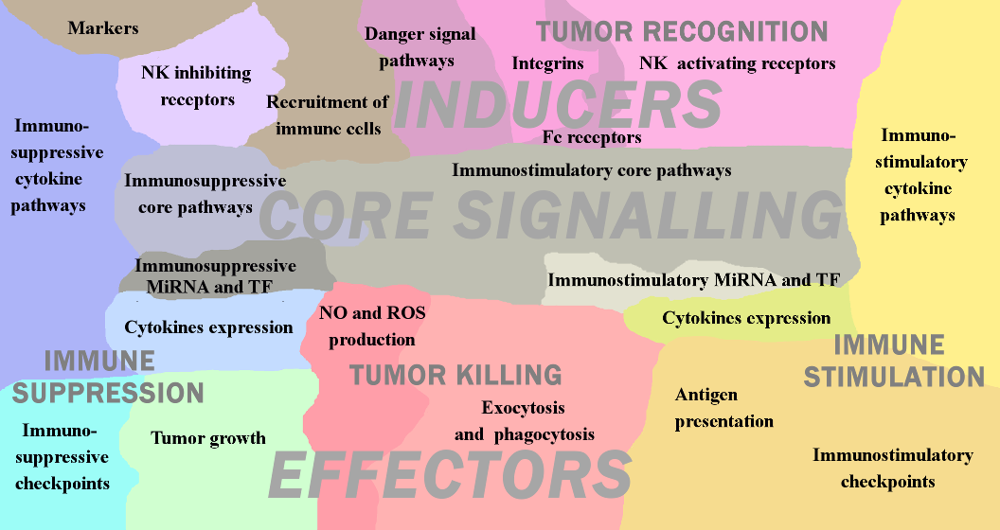
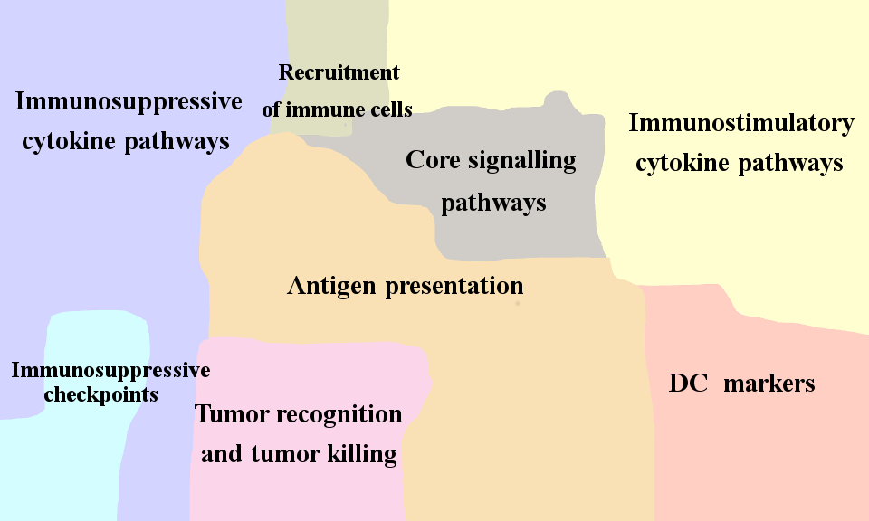
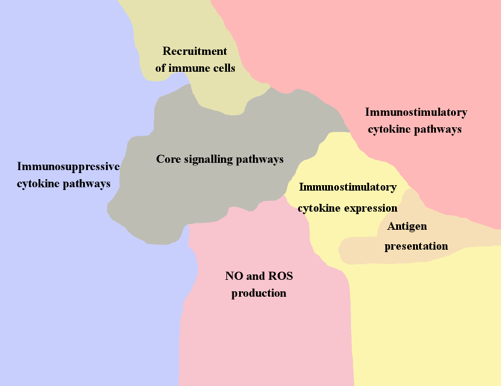
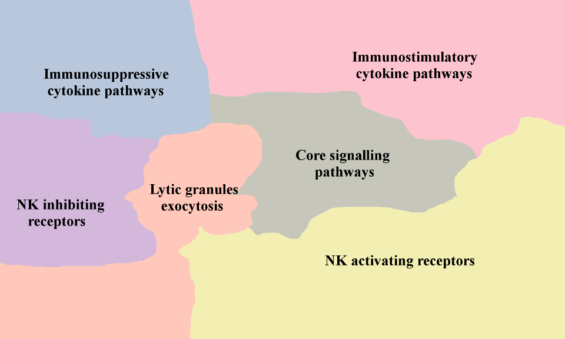

Institut Curie Collection of Innate Immunity Maps

- Innate immunity response in cancer meta-map
- Access to NaviCell
- Access to MINERVA
- Access to NDEx
The network map of innate immune response in cancer covers major signaling mechanisms occurring within and between different players of the innate immune component in TME. It represents both direct and indirect molecular interactions in innate immune cells, between immune cells and tumor cells. The structure of the map reflects the conceptual understanding of diversity and integrity of innate immunity system. The signaling within each innate immunity cell type is depicted in the form of separate maps covering signaling maps of macrophages, dendritic cells, myeloid-derived suppressor cells, natural killers, neutrophils and mast cells. These cell type-specific maps, integrated together and completed by interactions and crosstalk between them and the map of tumor cell, gave rise to a seamless comprehensive map of innate immune response in cancer. The innate immune response map demonstrates signaling responsible for anti- and pro-tumour activities of innate immunity system as a whole. The map contains 1476 objects (proteins, genes, small molecules, reactions etc.) and based on the information manually retrieved from 821 cell type specific and cancer-related articles.
Downloads
For Enrichment analyses, map related gene signatures (modules, signalling pathways, etc.) can be downloaded here.
The Protein-Protein Interaction network (SIF) can be downloaded here.
The references for articles used for the contruction of this map can be downloaded here.
The data used in the Live Example can be downloaded here. The data for the Map Staining was generated using the Module_Staining script available at GitHub

- Dendritic Cell Map
- Access to NaviCell
- Access to MINERVA
- Access to NDEx
Dendritic cells (DC) are innate immune cells that can have both myeloid and lymphoid origin. The main marker for mature dendritic cells is CD83+. Immature dendritic cells express among others HLA-DR, CD80, CD86, CD1a, CD40, CD14, CD11c, CD209, ILT3. Similarly to macrophages, dendritic cells possess phagocytic abilities, and can produce inflammatory cytokines as IFNs, IL12, etc. The major role of dendritic cells in anti-tumor response is antigen presentation and T-cell activation.

- Macrophage Cell and MDSC Map
- Access to NaviCell
- Access to MINERVA
- Access to NDEx
Macrophages are the major immune component of leucocyte infiltration in tumor. The main markers of macrophage are CD11b+, CD68+, LGALS+ and CD163. Anti-tumor polarization of macrophages is related to their ability to recognize and to reject tumor cells by phagocytosis, represent tumor antigens on the cell surface and induce T-cell response. Macrophages produce cytotoxic agents such as Reactive Oxygen Species and Nitrite Oxide, secrete chemokines as CXCL-8, CCL2, CCL3, etc and attract immune cells into the TME. It addition, they express inflammatory cytokines as TNF, IL12, IL1, etc. facilitating local immunity activation. Tumor associated macrophages (TAMs) can also act as pro-tumor agents, expressing tumor stimulating growth factors as PDGF, EGF, VEGF, FGF, producing immunosuppressive molecules as IL10 and TGFB, that induce angiogenesis and matrix remodelling in TME and consequently facilitate metastatic process.
Myeloid-derived suppressor cells (MDSC) represent heterogeneous population of myeloid cells. In general, the role of MDSC in TME is similar toTAMs. Their main markers are CD33+, CD15+ (granulocytic), CD14+ (monocytic), CD34+ and CD11b+. MDSC suppress T-cell response and Natural killers activity via TGFB signaling and arginine depletion from TME. In addition, MDSCs induce EMT and angiogenesis and participates in matrix remodelling via VEGF and MMPs secretion. MDSC mostly show a pro-tumor activity, therefore presence of this cell type in tumor is correlated with poor clinical prognosis.

- Natural Killer Cell Map
- Access to NaviCell
- Access to MINERVA
- Access to NDEx
Natural killers (NK) are big granular lymphocytes which can be cytotoxic for tumor cells. The markers of this cell type are specific NK-receptors as NKp30, NKp46, NKG2D, etc. The main role of NK cells in innate immunity is elimination of cells lacking MHC1 molecules that therefore cannot be recognized by T-cells. NK are stimulated by the target cells expressing NK receptors activating ligands such as MICA, MICB, etc. The activity of NK cells is modulated by inflammatory cytokines as IL15, IL12, produced by macrophages and dendritic cells. NK cells secrete granules contains lytic enzymes (granzymes, perforin, granulysin, etc) and express apoptosis inducers TRAIL and FASL. Presence of active NK cells in cancer is correlated with good prognosis. To escape NK control, tumor cells express immunosuppressive ligands as MIF, IL10, TGFB and downregulation of NK ligands expression that collectively inhibit cytotoxic activity of NK cells. Pro-tumor polarization of NK cells is not described in the literature, however suppressed NK cells are incapable to reject tumor cells and therefore indirectly promote cancer progression.